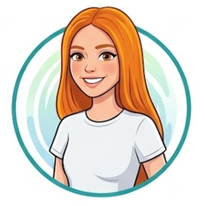

Valentina Rios
Fundadora de Parche Dev y desarrolladora web
Aprendió a programar en un curso nocturno. Creó Parche Dev para que nadie tuviera que aprender solo.
Sesiones: Bienvenida: por qué existe Parche Dev · Panel: Mi primer empleo en tecnología (moderadora).

Andres Mejia
Desarrollador frontend
Lleva ocho años haciendo sitios web y cree que un buen HTML resuelve la mitad de una interfaz.
Sesiones: HTML que se entiende sin CSS · Panel: Mi primer empleo en tecnología
Luisa Ocampo
Analista de datos
Convierte hojas de cálculo caóticas en bases de datos ordenadas. Para ella, SQL es un superpoder.
Sesiones: SQL para curiosos · Panel: Mi primer empleo en tecnología
Daniela Zapata
Especialista en accesibilidad web
Revisa sitios para que los usen personas con lector de pantalla, con teclado o con baja visión.
Sesiones: La web es para todos: accesibilidad desde el día uno

Santiago Gil
Desarrollador backend
Automatiza todo lo que se repite más de dos veces. En su taller harás un bot paso a paso.
Sesiones: Taller: Tu primer bot con Python
Julian Castaño
Desarrollador full stack
Publicó su primer sitio con HTML puro y hoy despliega en la nube. Su charla es en inglés.
Sesiones: From zero to deploy · Panel: Mi primer empleo en tecnología